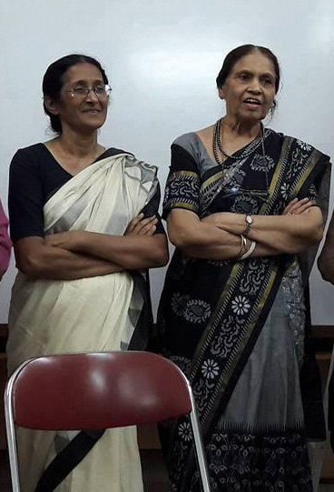

The garland of amity, P K Saru!!
The magnanimity of Saru matches no words! The wonder women of South East Asia with a magic healing touch to change life. The power of her words affirms freedom – freedom of mind, soul and spirit. She makes a massive difference in my life with moment to moment transformation giving new meaning of acceptance. She is more than a mentor or guru shedding light to grow in skill and competence. Her compassionate care reaches beyond all boundaries from my kinfolk to inside-out. Her garland of magnificent choices connects my human fragility with spontaneity and hope from within.
There is no end to telling about Saru just as there is no parting of Saru from my life. Saru is present and will be present forever with her glorious charismatic force till I meet her to say ‘Hello’ again with the same intensity. Waiting eagerly for the day!! No ‘Goodbye’ only to follow the golden road to eternity.
My voyage with legendary Saru started long before in the early 20’s with TA101. I am thankful to our beloved Khursheed Erfan, prodigy of the counseling crusade of Bangladesh, for introducing Saru. To fill the gap of certified counsellors, Ain O Salish Kendra (ASK), a legal organization, came forward to become a platform to train us in a systematic way. Besides offering TA 101 two times a year, Saru schemed first Diploma in 2002-2003, followed by two more. The upsurge extended to Dhaka University arranging TA101 and looking at the possibility of further expansion. TA Forum was organized by Department of Educational and Counselling Psychology to spread the voice of TA community in Bangladesh at national and international arena. Consistent persuasion of unfailing Saru tied all of us together in ebb and flow. Then a time came when there was a sudden change in the makeup of ASK policy constricting the scope of the training.
The shared vulnerability and Saru’s commitment to the growth of TA in this region led me to connect the endeavor with HEAL Bangladesh Foundation to keep the continuity of Saru’s guidance. Then after Nasima kept the boat sailing through her brilliant leadership. Saru’s last visit at Freedom Within with Elana Leigh, the ITAA President, was a showcase of Bangladesh TA community to international alley. Yet the utmost fear of the fear came true. Beloved Saru travelled beyond earth to be one among the brightest stars in the galaxy of my heart for all time. I treasure many living experiences with her that if unfolded would be more than a saga. The anguish of not living up to her aspiration will remain in me with regret. In the present greater vastness of boundless Saru, I do hope and pray for her compassionate forgiveness.
Undoubtedly, as far I can gauge the pulse of all those connected with Saru, this would be an echo of many more from Bangladesh. The greatest challenge is to keep the torch illuminated. Have a peaceful life thereafter in the everlasting world my dear dearest Saru!! Undoubtedly you deserve the best!!!